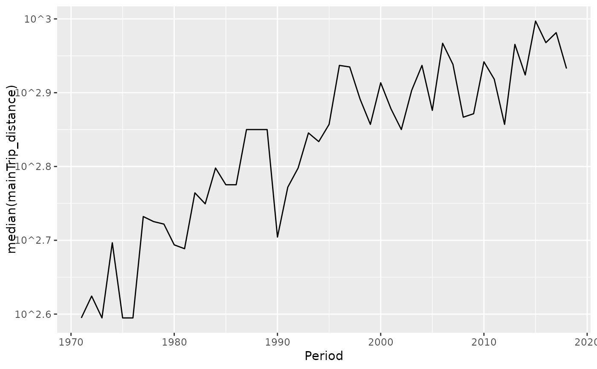
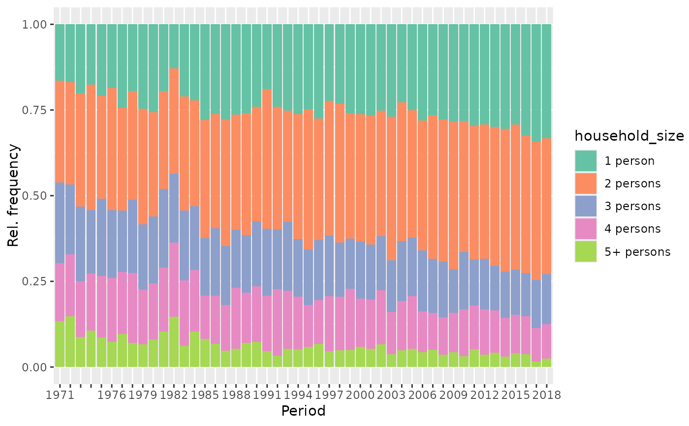
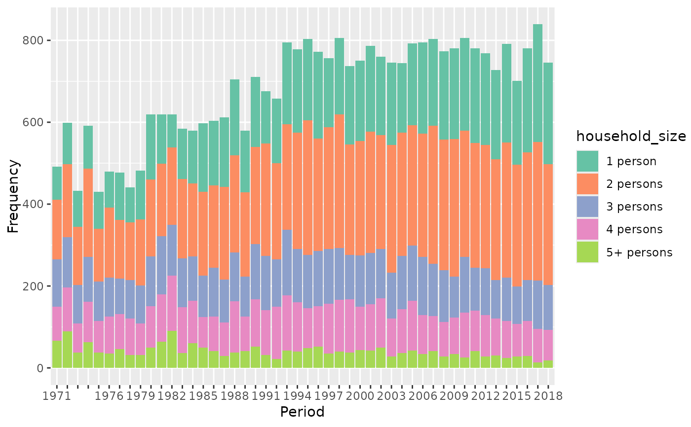

Distribution plot of one variable against one APC dimension
Source:R/plot_variable.R
plot_variable.RdPlot the distribution of one variable in the data against age, period or
cohort. Creates a bar plot for categorical variables (see argument
geomBar_position) and boxplots or a line plot of median values for
metric variables (see plot_type).
Usage
plot_variable(
dat,
y_var,
apc_dimension = "period",
log_scale = FALSE,
plot_type = "boxplot",
geomBar_position = "fill",
legend_title = NULL,
ylab = NULL,
ylim = NULL
)Arguments
- dat
Dataset containing columns
ageandperiod.- y_var
Character name of the variable to plot.
- apc_dimension
One of
c("age","period","cohort"). Defaults to"period".- log_scale
Indicator if the visualized variable should be log10 transformed. Only used if the variable is numeric. Defaults to FALSE.
- plot_type
One of
c("boxplot","line","line-points"), specifying if boxplots or a line plot of median values should be drawn for metric variables."line-points"adds points to the line plot where observations are available.- geomBar_position
Value passed to
geom_baraspositionargument. Only used if the visualized variable is categorical. Defaults to"fill".- legend_title
Optional character title for the legend which is drawn for categorical variables.
- ylab, ylim
Optional arguments for styling the ggplot.
Author
Alexander Bauer alexander.bauer@stat.uni-muenchen.de
Examples
library(APCtools)
data(travel)
# plot a metric variable
plot_variable(dat = travel, y_var = "mainTrip_distance",
apc_dimension = "period", log_scale = TRUE)
#> Excluding 9565 missing observations of mainTrip_distance...
plot_variable(dat = travel, y_var = "mainTrip_distance",
apc_dimension = "period", log_scale = TRUE, plot_type = "line")
#> Excluding 9565 missing observations of mainTrip_distance...

# plot a categorical variable
plot_variable(dat = travel, y_var = "household_size", apc_dimension = "period")
#> Excluding 10 missing observations of household_size...

plot_variable(dat = travel, y_var = "household_size", apc_dimension = "period",
geomBar_position = "stack")
#> Excluding 10 missing observations of household_size...
